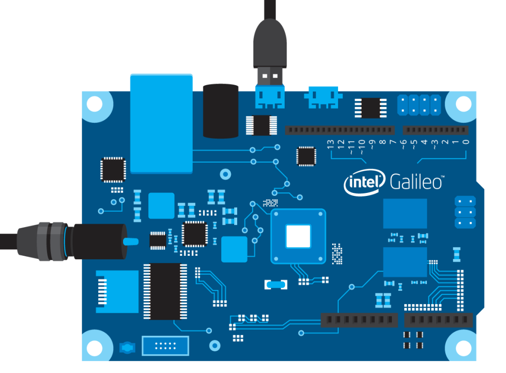
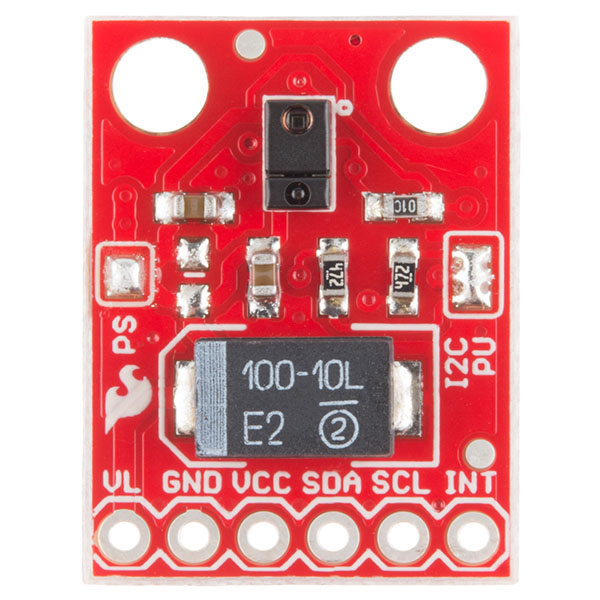

GeBot: Gesture Robot
About GeBot
- Gesture controlled vehicle
- Robotics project
- Natural User Interface
- Arduino Compatible

Main Components
|

Intel Galileo GEN 2 |
|
Main Components
|

SparkFun RGB and Gesture Sensor |
|